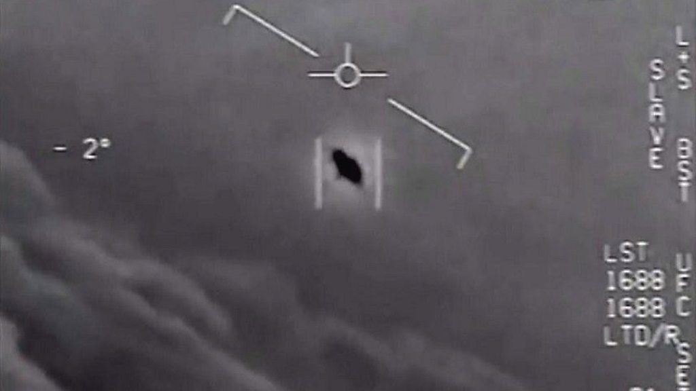

There's clearly something there.

The subject of UFOs used to be met with skeptism and it was perhaps a little taboo, as in, people might think you are a little crazy if you believe in those flying saucers. However, as new evidence keeps piling up, it's hard to deny that there isn't something out there.
In fact, it has come to light, through various government leaks and even old declassffied documents, that not only there is something there, but it seems to be important enough that various governments around the world have set up their own secret programs to investigate these objects, such as project Blue Book, created by the United States Air Force, which operated from 1952 until it dissolved in 1969.
Which, begs the question, why would governments around the world spend money and resources to try and figure out something that is a hoax?
PS: They wouldn't. Because is not a hoax, there really is unidentified flying objects visting our planet.
On this website, we have put together what we believe to be the most convincing cases concerning the phenomenon, as well as some of the current leading theories as to what or who they could be. Click on each one to learn more.
Some of the theories of what these objects could be range from aliens, gods, demons, a future version of ourselves, interdimensional beings, weather balloons, advanced secret technologies, unexplained weather phenomena, and many other variations of the same.
Here's some further reading for you to come to your own conclusions.